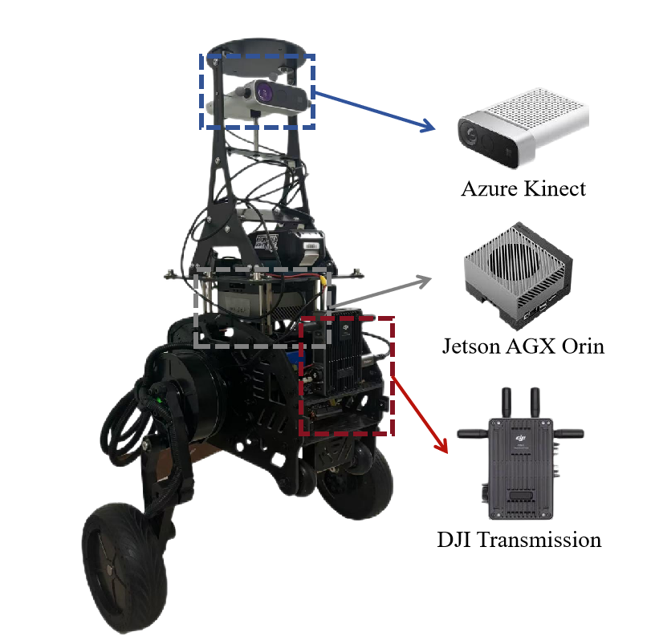
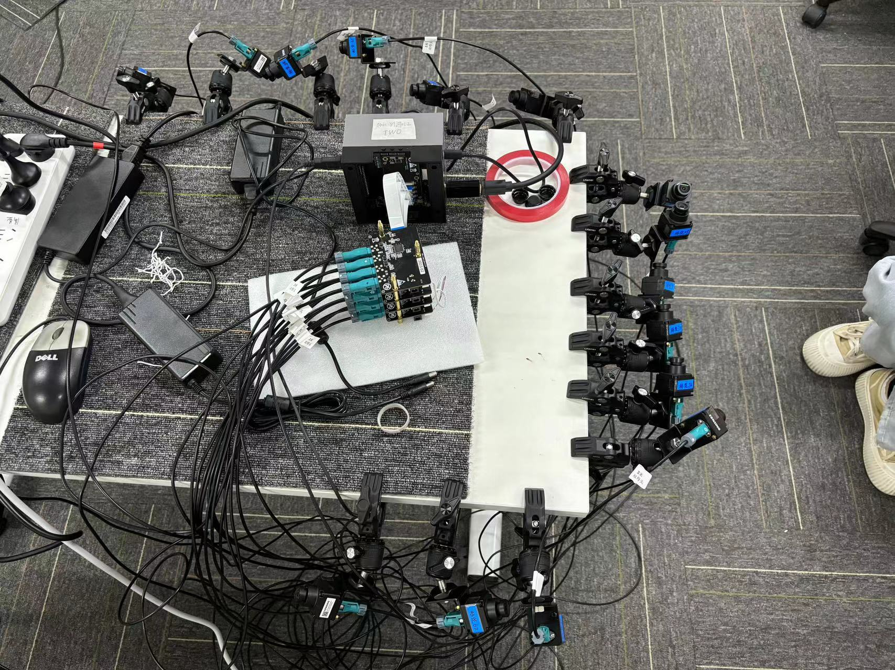
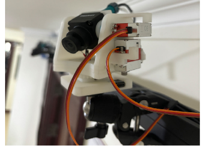
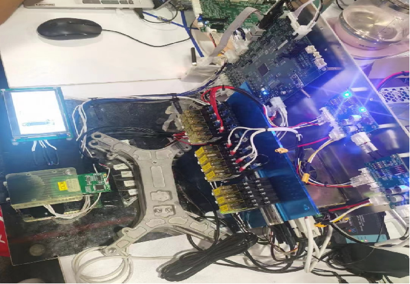
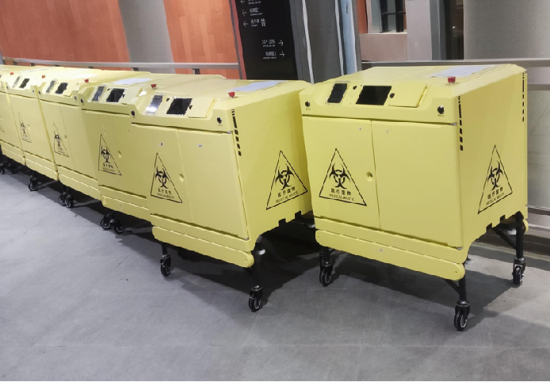

I am a Ph.D. student at the School of Computer Science and Technology, Beijing Institute of Technology, advised by
Wei Liang. I received my Bachelor's degree in 2023 and Master's degree in 2025 from
Beijing Institute of Technology, under the supervision of
Yi Yang.
I'm currently working at General Vision Lab in BIGAI (Beijing Institute for General Artificial Intelligence) as a research intern,
advised by Baoxiong Jia and Siyuan Huang.
Currently, my research is centered on computer vision and embodied artificial intelligence, with a particular emphasis on visual perception, interactive reasoning, and 3D scene understanding. Looking ahead, my work will explore embodied scene interaction within the real2sim2real paradigm, aiming to advance methodologies that improve both the efficiency and fidelity of data acquisition. In parallel, I am investigating the development of more effective learning paradigms to support robust and scalable embodied intelligence across diverse environments.
Recent Research
Featured work · Under review
Zero-HLM
Generalizable Humanoid Loco-Manipulation without Real Robot Data
Embodied Interaction of a Mobile Dual-Arm Robot Yijun Sun,
Dianyi Yang *,
Chenhao Zhang * 2024.09-Now
Responsible for researching semantic scene representation based on 3DGS to achieve efficient object-level localization and semantic learning. Our current work focuses on embodied interaction and active perception.

ININ-Diablo: Development of an Autonomous Exploration and Mapping Robot Dianyi Yang,
Shiyang Liu *,
Bohan Ren *,
Yu Gao *,
2024.09-Now
Responsible for partial hardware debugging of the robot and tasks related to semantic cognition. Our future work will focus on vision-language navigation and monocular outdoor autonomous exploration.


Large-Scale Multi-Camera Real-Time Synchronized Acquisition and 3D Reconstruction System Dianyi Yang,
Haolin Yu,
Yu Gao,
2023.09-2024.02
Responsible for the development of the entire system, including multi-camera calibration, real-time image transmission, camera gimbal testing, and software design.


Embedded Development of Intelligent Medical Waste Recycling Robot (SAITE INTELLIGENCE Guangzhou) Dianyi Yang,
Xitong Zeng,
2023.06-2023.09
Responsible for the embedded development of the robot's core functionalities, including human-machine interaction devices and intelligent capacity detection systems.
Responsible for leading the team in an in-depth study of the laboratory's key research achievement—the intelligent unmanned logistics tractor—and participating in academic science and technology competitions.
Academic Services
IEEE/RSJ International Conference on Intelligent Robots and Systems (IROS) 2024 Reviewer
IEEE/RSJ International Conference on Robotics and Automation (ICRA) 2025 Reviewer
IEEE/CVF Conference on Computer Vision and Pattern Recognition (CVPR) 2025 Reviewer
Awards
2019-2023: Outstanding Students, Beijing Institute of Technology
🏀 2019,2020,2023: Top 4 in Class Basketball Tournament, Playing as Shooting Guard (No. 2 Position)
🏓 2023: Second Place in the Yanhe Cup (University-Level) Team Competition
🏓 2022: Third Place in the Yanhe Cup (University-Level) Team Competition
2018: Outstanding Students, NeiMengGu Province
Experience
Beijing Institute for General Artificial Intelligence(BIGAI), China
2025.09 - now
Master Student Research Advisor: Dr. Baoxiong Jia and Dr. Siyuan Huang
Beijing Institute of Technology, China
2025.09 - now
Ph.D. Student Research Advisor: Prof. Wei Liang
Beijing Institute of Technology, China
2023.09 - 2025.06
Master Student Research Advisor: Prof. Yi Yang
Beijing Institute of Technology, China
2019.09 - 2023.06
Undergraduate Student Research Advisor: Prof. Yi Yang